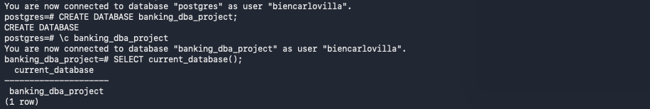
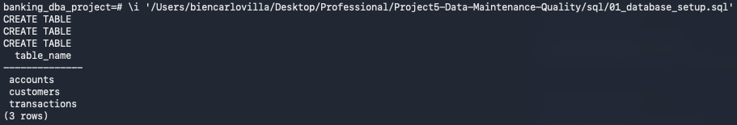
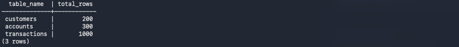
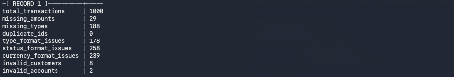
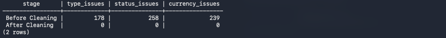
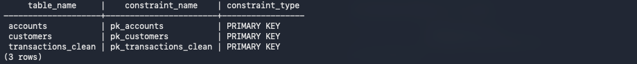
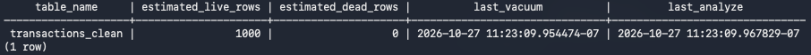
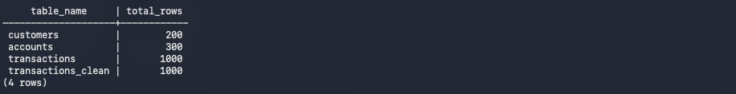

DATABASE MANAGEMENT & DATA ENGINEERING · PROJECT 01
Banking Database Maintenance & Data Quality
A hands-on PostgreSQL administration project covering banking data quality audits, cleaning, relational integrity, indexing, routine maintenance, and verified backup recovery.
Project Overview
I built a PostgreSQL banking database using three CSV datasets, audited transaction quality, and cleaned formatting in a separate working table to preserve the originals. I validated keys, documented unresolved reference issues, performed maintenance, and restored a database backup into a separate test database.
SQL & DBA Workflow
Open each phase to view the actual SQL scripts, explanations, and screenshots captured during execution.
01 · Database SetupCreated three source tables and imported 1,500 banking records.⌄
Created three source tables and imported 1,500 banking records.
-- Project #5: Banking Database Maintenance & Data Quality
-- Phase 1: Database Setup
-- 1. Create customer table
CREATE TABLE customers (
customer_id TEXT,
customer_name TEXT,
gender TEXT
);
-- 2. Create account table
CREATE TABLE accounts (
account_id TEXT,
account_type TEXT,
status TEXT
);
-- 3. Create transaction table
CREATE TABLE transactions (
transaction_id TEXT,
customer_id TEXT,
account_id TEXT,
branch_id TEXT,
employee_id TEXT,
date_id TEXT,
amount TEXT,
transaction_type TEXT,
transaction_status TEXT,
currency TEXT
);
-- 4. Verify tables
SELECT table_name
FROM information_schema.tables
WHERE table_schema = 'public'
ORDER BY table_name;
-- 5. Import banking datasets
\copy customers FROM '/Users/biencarlovilla/Desktop/Professional/Project5-Data-Maintenance-Quality/data/DimCustomer.csv' WITH (FORMAT csv, HEADER true);
\copy accounts FROM '/Users/biencarlovilla/Desktop/Professional/Project5-Data-Maintenance-Quality/data/DimAccount.csv' WITH (FORMAT csv, HEADER true);
\copy transactions FROM '/Users/biencarlovilla/Desktop/Professional/Project5-Data-Maintenance-Quality/data/FactBankTransactions.csv' WITH (FORMAT csv, HEADER true);
-- 6. Verify imported records
SELECT 'customers' AS table_name, COUNT(*) AS total_rows
FROM customers
UNION ALL
SELECT 'accounts', COUNT(*)
FROM accounts
UNION ALL
SELECT 'transactions', COUNT(*)
FROM transactions;



02 · Data Quality AuditAudited missing fields, inconsistent text, duplicates, and orphaned references.⌄
Audited missing fields, inconsistent text, duplicates, and orphaned references.
-- Project #5: Banking Database Maintenance & Data Quality
-- Phase 2: Data Quality Audit
-- 1. Check missing values in transactions
SELECT
COUNT(*) AS total_transactions,
COUNT(*) FILTER (
WHERE NULLIF(TRIM(amount), '') IS NULL
) AS missing_amount,
COUNT(*) FILTER (
WHERE NULLIF(TRIM(transaction_type), '') IS NULL
) AS missing_transaction_type,
COUNT(*) FILTER (
WHERE NULLIF(TRIM(customer_id), '') IS NULL
) AS missing_customer_id,
COUNT(*) FILTER (
WHERE NULLIF(TRIM(account_id), '') IS NULL
) AS missing_account_id
FROM transactions;
-- 2. Check duplicate transaction IDs
SELECT
transaction_id,
COUNT(*) AS duplicate_count
FROM transactions
GROUP BY transaction_id
HAVING COUNT(*) > 1
ORDER BY duplicate_count DESC;
-- 3. Check transaction type formatting
SELECT
transaction_type,
COUNT(*) AS total_records
FROM transactions
GROUP BY transaction_type
ORDER BY transaction_type;
-- 4. Check transaction status formatting
SELECT
transaction_status,
COUNT(*) AS total_records
FROM transactions
GROUP BY transaction_status
ORDER BY transaction_status;
-- 5. Check currency formatting
SELECT
currency,
COUNT(*) AS total_records
FROM transactions
GROUP BY currency
ORDER BY currency;
-- 6. Check invalid customer references
SELECT
COUNT(*) AS invalid_customer_references
FROM transactions t
LEFT JOIN customers c
ON TRIM(t.customer_id) = TRIM(c.customer_id)
WHERE c.customer_id IS NULL;
-- 7. Check invalid account references
SELECT
COUNT(*) AS invalid_account_references
FROM transactions t
LEFT JOIN accounts a
ON TRIM(t.account_id) = TRIM(a.account_id)
WHERE a.account_id IS NULL;
-- 8. Data quality audit summary
SELECT
(SELECT COUNT(*) FROM transactions) AS total_transactions,
(SELECT COUNT(*) FROM transactions
WHERE NULLIF(TRIM(amount), '') IS NULL) AS missing_amounts,
(SELECT COUNT(*) FROM transactions
WHERE NULLIF(TRIM(transaction_type), '') IS NULL) AS missing_types,
(SELECT COUNT(*) FROM (
SELECT transaction_id
FROM transactions
GROUP BY transaction_id
HAVING COUNT(*) > 1
) d) AS duplicate_ids,
(SELECT COUNT(*) FROM transactions
WHERE transaction_type IS NOT NULL
AND transaction_type <> INITCAP(TRIM(transaction_type)))
AS type_format_issues,
(SELECT COUNT(*) FROM transactions
WHERE transaction_status IS NOT NULL
AND transaction_status <> INITCAP(TRIM(transaction_status)))
AS status_format_issues,
(SELECT COUNT(*) FROM transactions
WHERE currency IS NOT NULL
AND currency <> UPPER(TRIM(currency)))
AS currency_format_issues,
(SELECT COUNT(*) FROM transactions t
WHERE NOT EXISTS (
SELECT 1 FROM customers c
WHERE TRIM(c.customer_id) = TRIM(t.customer_id)
)) AS invalid_customers,
(SELECT COUNT(*) FROM transactions t
WHERE NOT EXISTS (
SELECT 1 FROM accounts a
WHERE TRIM(a.account_id) = TRIM(t.account_id)
)) AS invalid_accounts;

03 · Data CleaningPreserved original transactions and standardized a separate 1,000-row working copy.⌄
Preserved original transactions and standardized a separate 1,000-row working copy.
-- Project #5: Banking Database Maintenance & Data Quality
-- Phase 3: Data Cleaning
-- 1. Create a working copy
CREATE TABLE transactions_clean AS
SELECT *
FROM transactions;
-- 2. Verify copied records
SELECT COUNT(*) AS total_records
FROM transactions_clean;
-- 3. Standardize transaction types
UPDATE transactions_clean
SET transaction_type = INITCAP(TRIM(transaction_type))
WHERE transaction_type IS NOT NULL;
-- 4. Verify cleaned transaction types
SELECT
transaction_type,
COUNT(*) AS total_records
FROM transactions_clean
GROUP BY transaction_type
ORDER BY transaction_type;
-- 5. Standardize transaction statuses
UPDATE transactions_clean
SET transaction_status = INITCAP(TRIM(transaction_status))
WHERE transaction_status IS NOT NULL;
-- 6. Verify cleaned transaction statuses
SELECT
transaction_status,
COUNT(*) AS total_records
FROM transactions_clean
GROUP BY transaction_status
ORDER BY transaction_status;
-- 7. Standardize currency codes
UPDATE transactions_clean
SET currency = UPPER(TRIM(currency))
WHERE currency IS NOT NULL;
-- 8. Verify cleaned currency codes
SELECT
currency,
COUNT(*) AS total_records
FROM transactions_clean
GROUP BY currency
ORDER BY currency;
-- 9. Verify data cleaning results
SELECT
'Before Cleaning' AS stage,
COUNT(*) FILTER (
WHERE transaction_type IS NOT NULL
AND transaction_type <> INITCAP(TRIM(transaction_type))
) AS type_issues,
COUNT(*) FILTER (
WHERE transaction_status IS NOT NULL
AND transaction_status <> INITCAP(TRIM(transaction_status))
) AS status_issues,
COUNT(*) FILTER (
WHERE currency IS NOT NULL
AND currency <> UPPER(TRIM(currency))
) AS currency_issues
FROM transactions
UNION ALL
SELECT
'After Cleaning',
COUNT(*) FILTER (
WHERE transaction_type IS NOT NULL
AND transaction_type <> INITCAP(TRIM(transaction_type))
),
COUNT(*) FILTER (
WHERE transaction_status IS NOT NULL
AND transaction_status <> INITCAP(TRIM(transaction_status))
),
COUNT(*) FILTER (
WHERE currency IS NOT NULL
AND currency <> UPPER(TRIM(currency))
)
FROM transactions_clean;

04 · Data IntegrityValidated identifiers and added three primary keys; foreign keys remain unenforced because source references are invalid.⌄
Validated identifiers and added three primary keys; foreign keys remain unenforced because source references are invalid.
-- Project #5: Banking Database Maintenance & Data Quality
-- Phase 4: Data Integrity
-- 1. Check customer IDs before adding a primary key
SELECT
COUNT(*) AS total_customers,
COUNT(*) FILTER (
WHERE customer_id IS NULL
) AS missing_ids,
COUNT(*) - COUNT(DISTINCT customer_id) AS duplicate_ids
FROM customers;
-- 2. Add primary key to customers table
ALTER TABLE customers
ADD CONSTRAINT pk_customers
PRIMARY KEY (customer_id);
-- 3. Verify primary key constraint
SELECT
constraint_name,
constraint_type
FROM information_schema.table_constraints
WHERE table_name = 'customers'
AND constraint_type = 'PRIMARY KEY';
-- 4. Check account IDs before adding a primary key
SELECT
COUNT(*) AS total_accounts,
COUNT(*) FILTER (
WHERE account_id IS NULL
OR TRIM(account_id) = ''
) AS missing_ids,
COUNT(*) - COUNT(DISTINCT account_id) AS duplicate_ids
FROM accounts;
-- 5. Add primary key to accounts table
ALTER TABLE accounts
ADD CONSTRAINT pk_accounts
PRIMARY KEY (account_id);
-- 6. Verify account primary key
SELECT
constraint_name,
constraint_type
FROM information_schema.table_constraints
WHERE table_name = 'accounts'
AND constraint_type = 'PRIMARY KEY';
-- 7. Validate transaction IDs before adding a primary key
SELECT
COUNT(*) AS total_transactions,
COUNT(*) FILTER (
WHERE transaction_id IS NULL
OR TRIM(transaction_id) = ''
) AS missing_ids,
COUNT(*) - COUNT(DISTINCT transaction_id) AS duplicate_ids
FROM transactions_clean;
-- 8. Add primary key to cleaned transactions
ALTER TABLE transactions_clean
ADD CONSTRAINT pk_transactions_clean
PRIMARY KEY (transaction_id);
-- 9. Verify transaction primary key
SELECT
constraint_name,
constraint_type
FROM information_schema.table_constraints
WHERE table_name = 'transactions_clean'
AND constraint_type = 'PRIMARY KEY';
-- 10. Verify invalid foreign key references
SELECT
COUNT(*) FILTER (
WHERE NOT EXISTS (
SELECT 1
FROM customers c
WHERE TRIM(c.customer_id) = TRIM(t.customer_id)
)
) AS invalid_customer_references,
COUNT(*) FILTER (
WHERE NOT EXISTS (
SELECT 1
FROM accounts a
WHERE TRIM(a.account_id) = TRIM(t.account_id)
)
) AS invalid_account_references
FROM transactions_clean t;
-- 11. Verify all primary key constraints
SELECT
table_name,
constraint_name,
constraint_type
FROM information_schema.table_constraints
WHERE table_schema = 'public'
AND table_name IN (
'customers',
'accounts',
'transactions_clean'
)
AND constraint_type = 'PRIMARY KEY'
ORDER BY table_name;

05 · Database MaintenanceCreated a customer ID index, ran VACUUM ANALYZE, and reviewed maintenance statistics.⌄
Created a customer ID index, ran VACUUM ANALYZE, and reviewed maintenance statistics.
-- Project #5: Banking Database Maintenance & Data Quality
-- Phase 5: Database Maintenance
-- 1. Create index on customer_id for transaction lookups
CREATE INDEX idx_transactions_customer_id
ON transactions_clean (customer_id);
-- 2. Verify index creation
SELECT
indexname,
tablename,
indexdef
FROM pg_indexes
WHERE schemaname = 'public'
AND indexname = 'idx_transactions_customer_id';
-- 3. Perform database maintenance
VACUUM (VERBOSE, ANALYZE) transactions_clean;
-- 4. Verify database maintenance statistics
SELECT
relname AS table_name,
n_live_tup AS estimated_live_rows,
n_dead_tup AS estimated_dead_rows,
last_vacuum,
last_analyze
FROM pg_stat_user_tables
WHERE relname = 'transactions_clean';

06 · Backup & RecoveryCreated a custom-format backup and verified restoration in a separate database.⌄
Used pg_dump to back up the source database and pg_restore to restore into banking_dba_restore_test. Confirmed row counts of 200 customers, 300 accounts, 1,000 original transactions, and 1,000 cleaned transactions. Backup archives are intentionally excluded from GitHub.
pg_dump -U biencarlovilla -d banking_dba_project -F c -f backup/banking_dba_project.backup
createdb -U biencarlovilla banking_dba_restore_test
pg_restore -U biencarlovilla -d banking_dba_restore_test --exit-on-error --verbose backup/banking_dba_project.backup
Data Quality Findings
- 29 missing transaction amounts and 188 missing transaction types remained unresolved rather than invented.
- 178 transaction-type, 258 status, and 239 currency formatting issues were standardized (675 field-level issues total).
- 8 invalid customer references and 2 invalid account references were documented; foreign key constraints were not applied.
- No duplicate transaction IDs were detected.
Maintenance & Recovery
Added a B-tree index on the cleaned transactions customer ID, ran VACUUM with ANALYZE, and verified the restored table counts. This demonstrates the workflow, not a measured performance gain or complete row-by-row restore comparison.
Dataset & Source
Original data: Banking Messy Dataset. This project uses the customer, account, and transaction CSV files.